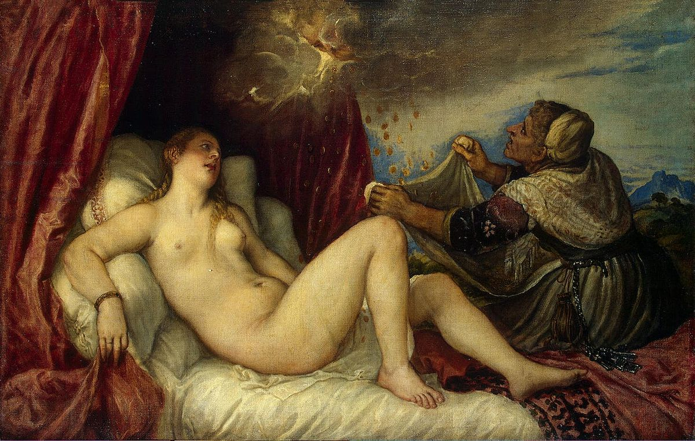

Si el lugar de nacimiento de Tiziano se conoce con certeza, la fecha es una incógnita. Existen tres hipótesis basadas en los documentos de la época. Según su partida de defunción, que se guarda en la iglesia veneciana de San Canciano, el artista murió a la edad de ciento tres años, por lo que el nacimiento se fecharía en 1473. Por otro lado, en la correspondencia de Tiziano a Felipe II de 1571, el pintor se presenta como este servidor suyo de noventa y cinco años de edad, deduciremos por tanto que nació en 1476. Sus contemporáneos Ludovico Dolce y Giorgio Vasari5 estiman que la fecha estaría comprendida entre 1488 y 1490. Ante estas diferencias, la crítica internacional se encuentra dividida. Los historiadores Harold Wethey y Sydney Freedberg creen más fiable el nacimiento entre 1488 y 1490. El Centro de Estudios de y otros autores determinan que debió de producirse entre 1480 y 1485, desechando otras fechas por la precocidad demasiado sospechosa a juicio de algunas obras iniciales. Esta última opinión es la que está más consolidada. Puede que la razón de la fecha errónea en la carta al rey español se debiera a que el artista pretendía presentarse como un venerable anciano para recabar la compasión del monarca.

Tiziano procedía de una familia con elevado estatus en Cadore: era el cuarto hijo de Gregorio Vecelli, un distinguido concejal y militar, y de su esposa Lucia. No existían antecedentes familiares en el campo del arte. Sin embargo, a la edad de 10 años, Tiziano y su hermano mayor, Francesco, acudieron a Venecia para ingresar como aprendices en el taller de Sebastiano Zuccato, un famoso mosaiquista. Debido a su incipiente talento, en el transcurso de tres o cuatro años, entró en el estudio del venerable pintor Giovanni Bellini, que en ese momento era el artista más reconocido de la ciudad. Allí se encontró con un grupo de jóvenes que conformarían la primera generación de pintores de la Escuela veneciana: Giovanni Palma da Serinalta, Lorenzo Lotto, Sebastiano Luciani, y Giorgio da Castelfranco, conocido como Giorgione. Su hermano Francesco también gozó de cierta relevancia en Venecia como pintor.
El fresco sobre Hércules en el palacio Morosini se considera como una de sus primeras creaciones. Otras obras tempranas son la Virgen con el Niño del palacio de Belvedere en Viena y la Visitación de María a Isabel (del convento de San Andrés), expuesta hoy en la Galería de la Academia de Venecia. Tiziano y Giorgione, en esta época, estuvieron asociados, de ahí la dificultad de distinguir sus primeras obras. La primera obra conocida de Tiziano, el pequeño Ecce Homo de la Escuela de San Roque, fue durante mucho tiempo atribuido a Giorgione. La misma confusión de identificación se produce con más de algunas de sus Sacra conversazione. Estos dos maestros fueron los líderes de la nueva escuela de "arte moderna" de pintura, que adquirió modos de ejecución más flexibles, libres de la simetría y el hieratismo que aún podemos observar en la obra de Giovanni Bellini.
De 1507 a 1508, se le encargó a Giorgione la remodelación de la Fondaco dei Tedeschi, lonja de los poderosos comerciantes alemanes en la ciudad adriática. Tiziano y Morto da Feltre colaboraron con él en la realización de los frescos, conservándose aún algunos de los fragmentos de Tiziano. Esta obra se conoce con exactitud debido a los grabados de Domenico Fontana, ya que no se preservan íntegramente los frescos.
Cuando en 1510 la epidemia de peste se extendió por Venecia y acabó con la vida de su compañero Giorgione, Tiziano marchó a Padua, donde demostró su talento para la técnica del fresco en sus trabajos en esta ciudad en 1511, tanto en la iglesia de los carmelitas como en la Escuela de San Antonio. Algunos de estos trabajos aún se conservan. Destacan El abrazo en la puerta dorada y tres escenas de la vida de San Antonio de Padua: El milagro del recién nacido, El milagro del marido celoso y El milagro del hijo irascible.
En 1512, Tiziano volvió de Padua a Venecia, donde comenzó a establecer una red de relaciones que lo llevaría a la cúspide del grupo veneciano de artistas. Pronto obtuvo trabajo de la Fondaco dei Tedeschi, consiguió de esta La Sanseria o Senseria (un privilegio muy codiciado por los artistas emergentes), y llegó a ser superintendente de las obras gubernamentales, cargo de pintor oficial de la República de Venecia, que le reportaría suficiente remuneración y otros privilegios añadidos. Tiziano lo ostentaría ininterrumpidamente durante sesenta años, hasta su muerte.
Fue especialmente emotivo el encargo de completar la decoración, inacabada por Bellini, de la Sala del Gran Consejo del Palacio Ducal (destruida por un incendio en 1577) en la que representaría la batalla de Spoleto. Abrió su propio taller, cerca del Gran Canal en San Samuele, en una ubicación desconocida actualmente. En 1513, el cardenal Pietro Bembo le trasladó la invitación del papa León X para instalarse en Roma y, aunque la oferta era tentadora prefirió quedarse en Venecia, donde la competencia artística era menos intensa que en la sede papal. No fue, sin embargo, hasta la muerte en 1516 de su maestro, Giovanni Bellini, cuando su prestigio empezó a crecer. En esta época, recibió un encargo muy exclusivo que le reportaría una notable anualidad de veinte coronas y la exención de ciertas tasas. Se trataba de una serie de retratos de los sucesivos duxes de Venecia, siendo remunerado cada uno con ocho coronas. Tiziano realizó sólo cinco de esta serie.